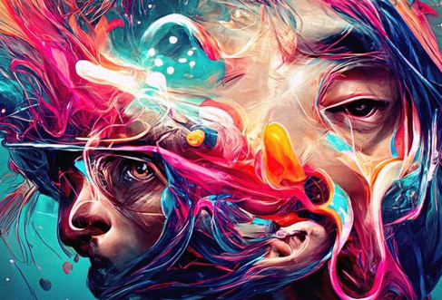

inteligencia artificial: En términos simples, inteligencia artificial (IA) se refiere a sistemas o máquinas que imitan la inteligencia humana para realizar tareas y pueden mejorar iterativamente a partir de la información que recopilan.
La inteligencia artificial (IA) se está convirtiendo en una fuerza transformadora en todos los sentidos, hasta en el arte. Esta tecnología está generando ilustraciones tan increíbles que incluso están ganando premios internacionales. Y es aquí donde entra la polémica, ¿son de verdad artistas?.
Midjourney, Dalle-E o Stable Diffusion son algunos de los ejemplos concretos actuales para la creación de imágenes “con sentido”, en los que los usuarios pueden ordenar solo con texto a los robots para que realicen sus propias obras. Como en los seres humanos, las máquinas usan “neuronas” o redes generativas para lograr su cometido.
se sabe que cada persona plasma sus imagenes de formas diferentes ya sea en un papel o lienzo , hoy en dia algunos artistes que trabajas con programas para dibujar son atacados o se les menostresia su trabajo por que "el programa hace todo" ignorado el trabajo y el desarrollo que se debe tener para usar de manera mas profecional los programas. asi mismo esta la polemica de la ia algunos usuarios encuentran que la ia toma de dibujos ya existentes para crear nuevas imagenes.